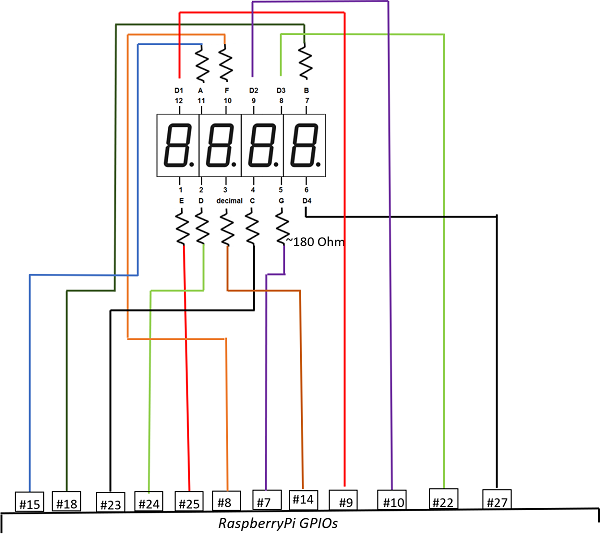

Direct approach
This method does not require any chip. Each segment in sector is managed by its own GPIO pin. It can serve the common-anode and common-cathod display.
The method requires 7 pins to display decimal and additionally one pin per sector. For example 4-sector-display requires 7 + 4 = 11 GPIO pins. 8-sector-display requires 7 + 8 = 15 GPIO pins.
If you use dot on display you need the additional pin. For example 4-sector-display requires 7 + 1 + 4 = 12 GPIO pins.
Usage
Without dot
using NumericDisplay
d = DisplayDirect(
[ # pins to on/off sectors
5, # less significant decimal digit
6,
13,
19 # most significant decimal digit
],
( # pins connected to segments
2, # a segment
3, # b
4, # c
17, # d
27, # e
22, # f
10 # g
);
inverted_input = true
)
write_number(d, 666) # display _666
sleep(1)
stop(d) # display nothingWith dot
using NumericDisplay
d = DisplayDirect # pins to on/off sectors
27, # less significant decimal digit
22,
10,
9 # most significant decimal digit
],
( # pins connected to segments
2, # a segment
3, # b
4, # c
17, # d
27, # e
22, # f
10 # g
);
11; # pin to control dot
inverted_input = true
)
write_number(d, 666) # display _666
sleep(1)
write_number(d, 666, 2) # display _66.6
sleep(1)
stop(d) # display nothingCircuit
Common anode and cathode scheme

Notes
- The scheme uses power from 3.3V signal pins. To use the external power you need to use NPN or MOSFET transistors.
- If you use common anode, use
DisplayDirect(...; inverted_input=true, inverted_input=false)in constructor. - If you use common cathode, use
DisplayDirect(...; inverted_input=false, inverted_input=true)in constructor.